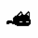
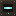
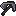

01 / POCKET DIMENSION↗
INVENTORY
NOT FOUND4D / ∞
NOT FOUND4D / ∞

过往浮现ZUOYANMOD MC 1.26.3把四维空间装进口袋，让暗物质在虚空中共振。
这里有奇思妙想，也有足以改写战局的传奇装备。
装下更多，探索更多，
然后用自己的方式创造传奇。

PARTICLE启动微型强子对撞机，让稀有物质相遇，解锁宇宙级造物。
穿过空间的裂隙，在陌生维度中寻找矿脉、遗迹与新的故事。

PICKAXE · AXE从木质到下界合金，六档万能工具把镐、斧、铲、锄、剑融为一体。
每一次相遇，都可能改变
这个世界的物理法则。
让引力张开，再看万物归于奇点。
扣下扳机，让平行宇宙的射线改写结局。
让热运动归于寂静，冻结战场上的可能。
一件危险的遗物，一个无法轻率书写的名字。
更多装备、饰品、音乐唱片与世界事件，等待在你的存档中逐一浮现。

带上你的好奇心，叫上朋友，
让熟悉的世界浮现新的可能。
准备 Minecraft 1.26.3
并安装 NeoForge 26.3
将 ZuoyanMod 模组文件
放入实例的 mods 文件夹
启动游戏，打开创造栏
「过往浮现」，开始探索